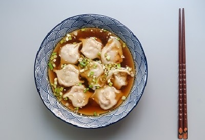

Hay muchas variedades de dumplings, todos dependiendo de la región de Asia de la que provienen. Top 5 de mis locales favoritos donde los hacen.

Los Dorayakis son dulces japoneses tan simples como ricos. Hoy, pruebo los de Nikkai.

Probablemente la comida asiática más masiva. Extensa nota sobre los lugares que los venden y cuáles recomiendo.